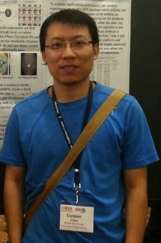

Cunjian Chen’s Homepage
|  | Cunjian Chen, Ph.D. 2014 Postdoctoral Fellow Email: cunjian.chen@outlook.com Research Blog: Personal blog on Deep Learning Advisor: Prof. Arun Ross, Associate Professor, Michigan State University |
I received M.S. and Ph.D. degrees in Computer Science from West Virginia University, in 2011 and 2014 respectively, supervised by Dr. Arun Ross. From August 2013 to August 2014, I was a Visiting Scholar in the Department of Computer Science Engineering at Michigan State University. After graduation, I worked as a Postdoctoral Fellow at Michigan State University.
Recent Updates
Serve as a Program Committee Member for 12th IEEE CVPR Workshop PBVS
Serve as a Program Committee Member for ICB 2016
Research Experience
Canon Information Technology, Beijing, CN
Senior Researcher, 09/2015- Present
Michigan State University, East Lansing, US
Postdoctoral Fellow (non-contract), 01/2015- 05/2015
Michigan State University, East Lansing, US
Postdoctoral Fellow, 08/2014- 01/2015
Michigan State University, East Lansing, US
Visiting Scholar, 08/2013 - 09/2014
West Virginia University, Morgantown, US
Research Assistant, 08/2008- 08/2014
Research Interests
Deep Learning; Face Alignment; Face Recognition; Biometrics; Soft Biometrics Estimation.
Book Chapters
D. Reid, S. Samangooei, C. Chen, M. S. Nixon, A. Ross , "Soft Biometrics for Surveillance: An Overview ". in Handbook of Statistics, Vol. 31, C. R. Rao and V. Govindaraju (Eds.), Elsevier 2013.
Journals
C. Chen, A. Dantcheva, A. Ross, "An Ensemble of Patch-based Subspaces for Makeup-Robust Face Recognition", Information Fusion Journal, 2015 (Impact Factor: 3.681)
C. Chen and A. Ross, "Matching Thermal to Visible Face Images Using Hidden Factor Analysis in a Cascaded Subspace Learning Framework”. Pattern Recognition Letters, 2015 (Impact Factor: 1.55).
Conferences
A. Rattani, C. Chen, A. Ross, "Evaluation of Texture Descriptors for Automated Gender Estimation from Fingerprints". Proc. of ECCV Workshop on Soft Biometrics, (Zurich, Switzerland), September 2014. [PDF]
C. Chen, A. Dantcheva, A. Ross, "Impact of Facial Cosmetics on Automatic Gender and Age Estimation Algorithms". Proc. of 9th International Conference on Computer Vision Theory and Applications (VISAPP), (Lisbon, Portugal), January 2014. [PDF]
C. Chen, A. Dantcheva, A. Ross, "Automatic Facial Makeup Detection with Application in Face Recognition". Proc. of 6th IAPR International Conference on Biometrics (ICB), (Madrid, Spain), June 2013. [PDF]
C. Chen and A. Ross, "Local Gradient Gabor Pattern (LGGP) With Applications in Face Recognition, Cross-spectral Matching and Soft Biometrics". Proc. of SPIE Biometric and Surveillance Technology for Human and Activity Identification X, (Baltimore, USA), May 2013. [PDF]
A. Dantcheva, C. Chen, A. Ross, "Can Facial Cosmetics Affect the Matching Accuracy of Face Recognition Systems?". roc. of 5th IEEE International Conference on Biometrics: Theory, Applications and Systems (BTAS), (Washington DC, USA), September 2012. [PDF]
D. Cao, C. Chen, D. Adjeroh, A. Ross, "Predicting Gender and Weight from Human Metrology Using a Copula Model". Proc. of 5th IEEE International Conference on Biometrics: Theory, Applications and Systems (BTAS), (Washington DC, USA), September 2012. [PDF]
T. Bourlai, A. Ross, C. Chen, L. Hornak, "A Study on Using Mid-wave Infrared Images for Face Recognition". Proc. of SPIE Biometric and Surveillance Technology for Human and Activity Identification X, (Baltimore, USA), May 2012
C. Chen and A. Ross, "Evaluation of Gender Classification Methods on Thermal and Near-infrared Face Images". Proc. of International Joint Conference on Biometrics (IJCB), (Washington DC, USA), October 2011. [PDF]
D. Cao, C. Chen, M. Piccirilli, D. Adjeroh, T. Bourlai, A. Ross, "Can Facial Metrology Predict Gender?". Proc. of International Joint Conference on Biometrics (IJCB), (Washington DC, USA), October 2011. [PDF]
A. Ross and C. Chen, "Can Gender be Predicted from Near-Infrared Face Images?". Proc. of International Conference on Image Analysis and Recognition (ICIAR), (Burnaby, Canada), June 2011. 2011. [PDF]
Magazines
A. Dantcheva, C. Chen, A. Ross, "Makeup challenges automated face recognition systems”. SPIE Newsroom 2013, Defense and Security. DOI: 10.1117/2.1201303.004795.
Thesis
C. Chen, "Gender Classification from Facial Images”, M.S. Thesis, West Virginia University, 2011. Advisor: Prof. Arun Ross
C. Chen, "Patch-based Ensemble Learning Scheme for Heterogeneous Face Recognition”, Ph.D. Thesis, West Virginia University, 2014. Advisor: Prof. Arun Ross
Program Committee Member
IEEE International Conference on Identity, Security and Behavior Analysis (ISBA), Japan, Sendai, 2016.
The 9th IAPR International Conference on Biometrics (ICB), Halmstad, Sweden, June 13-16, 2016.
12th IEEE Workshop on Perception Beyond the Visible Spectrum (PBVS), in conjunction with CVPR 2016, Las Vegas, NV, USA.
13th International Conference on Advanced Video and Signal- Based Surveillance, Colorado Springs, Colorado, USA, August 23-26, 2016.
The 11th Chinese Conference on Biometric Recognition, Chengdu, China, October, 2016.
The 7th Chinese Conference on Pattern Recognition (CCPR), Chengdu, China, November, 2016.
IEEE International Conference on Identity, Security and Behavior Analysis (ISBA), 2017
Professional Activities
Reviewer of Journals:
IEEE Transactions: T-PAMI, T-IP, T-IFS, T-CSVT
Elsevier Journals: CVIU, IVC, PRL, IPL, Journal of Signal Processing, Information Science, Journal of Visual Communication and Image Representation
Other Journals: IET Biometrics, IET Computer Vision, EURASIP
Reviewer of Conferences:
CVPR, FGR, BTAS, CVPR Workshop, ICIP 2015, ICPR, IJCB, ISPA, ICNNSP, ICICS, WACV2015
ISBA 2016, ICB 2016, ICIAR 2016, ICIP 2016, CVPR-PBVS2016, CCPR 2016, AVSS 2016, CCBR 2016
CMV 2017, FG 2017
Honors
FG 2013 Doctoral Consortium Award
IJCB 2014 Doctoral Consortium Award
ICB 2013 Best Poster Award